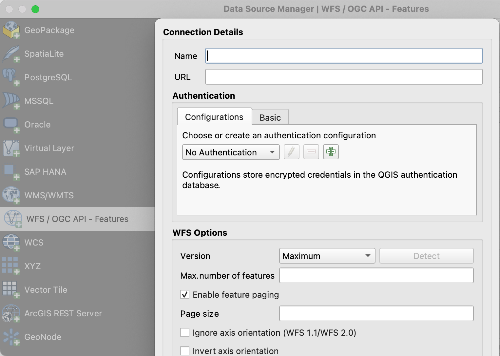
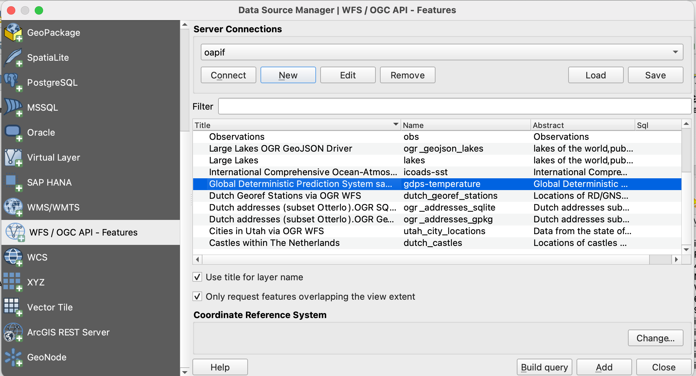

Exercício 2 - Dados vetoriais via OGC API - Features¶
A OGC API - Features fornece uma API Web para aceder a dados vetoriais (geometrias e os seus atributos). A especificação principal abrange o acesso e consulta básicos de dados, partes adicionais estão em desenvolvimento com as seguintes capacidades:
- OGC API - Features - Parte 1: Core fornece capacidades básicas de acesso e consulta
- OGC API - Features - Parte 2: Coordinate Reference Systems by Reference permite a importação e exportação de dados de diferentes sistemas de coordenadas
- OGC API - Features - Parte 3: Filtering adiciona a capacidade de pesquisas complexas usando a Common Query Language (CQL2)
- OGC API - Features - Parte 4: Create, Replace, Update and Delete (rascunho) adiciona capacidades transacionais
Suporte da pygeoapi¶
A pygeoapi suporta todas as partes da especificação OGC API - Features acima (a Parte 3 depende do suporte do backend, por examplo, Elasticsearch).
Nota
Consulte a documentação oficial para mais informações sobre os backends vetoriais suportados.
Nota
Consulte a documentação oficial para mais informações sobre o suporte a CQL.
A seguir, vamos explorar como publicar dados vetoriais usando um GeoPackage.
Publicar um GeoPackage¶
Na secção anterior, demonstrámos os passos envolvidos para adicionar um conjunto de dados à pygeoapi e atualizar a sua configuração. Neste exercício, vamos publicar outro ficheiro vetorial, desta vez de uma fonte de dados vetoriais GeoPackage (SQLite3).
Dica
Pode ser útil abrir o conjunto de dados no QGIS enquanto adiciona e atualiza o seu servidor da pygeoapi para avaliar facilmente os atributos da tabela, nomes, propriedades espaciais e SRC.
Vamos adicionar o ficheiro workshop/exercises/data/brazil/guama_river.gpkg.zip:
Atualizar a configuração da pygeoapi
Primeiro, vamos descompactar o ficheiro
guama_river.gpkg.zip
para guama_river.gpkg.
Depois, abra o ficheiro de configuração da pygeoapi num editor de texto.
Encontre a linha # START - EXERCISE 2 - flowlines Guama River.
Adicione uma nova secção de conjunto de dados. descomentando as linhas até # END - EXERCISE 2 -
flowlines Guama River:
Guarde o ficheiro e reinicie o Docker Compose. Navegue para http://localhost:5000/collections para avaliar se o novo conjunto de dados com o título "Guama River" foi publicado.
Nota
O driver SQLite incidentalmente tem desafios para abrir a extensão GeoPackage no MacOS. Consulte a documentação oficial ou tente com um formato de dados alternativo. Se usar Docker, isto não é um problema.
OPCIONAL: Publicar um ficheiro GeoJSON usando Elasticsearch¶
Este exercício é opcional, se o tempo permitir, ou pode realizá-lo após o workshop.
Aqui exploramos a publicação de dados em OGC API - Features usando a pygeoapi com um fornecedor de backend Elasticsearch. Para isso, precisamos do repositório GitHub pygeoapi-examples:
Em alternativa, pode descarregar o repositório como um ficheiro .zip e descompactá-lo.
Mude para a pasta docker/elastic e execute o ficheiro docker-compose.yml:
Se tiver problemas a iniciar os serviços, consulte o ficheiro README. Pode precisar de adaptar a configuração de memória virtual do seu sistema.
Primeiro, vamos carregar o ficheiro greater_hyderabad_municipal_corporation_ward_Boundaries.geojson para o
servidor Elasticsearch.
Edite o script add-data.sh dentro da pasta ES, adicionando estas duas linhas antes do final:
greater_hyderabad_municipal_corporation_ward_Boundaries.geojson é descarregado
para dentro do container Docker do Elasticsearch e depois carregado para o Elasticsearch.
Depois disto, precisamos de reconstruir a imagem Docker:
A seguir, precisamos de configurar a pygeoapi inserindo o excerto abaixo no ficheiro de configuração da
pygeoapi pygeoapi/docker.config.yml. Esta modificação resulta na publicação do
ficheiro greater_hyderabad_municipal_corporation_ward_boundaries.geojson como OGC API - Features usando o
fornecedor de backend Elasticsearch.
No arranque (ex: docker compose up -d), o contentor da pygeoapi irá esperar até que os dados tenham sido ingeridos e o índice do Elasticsearch tenha sido construído. Pode verificar os registos usando:
Depois do servidor ter arrancado, pode aceder à página da coleção aqui:
http://localhost:5000/collections/hyderabad
E aos itens (features) aqui:
http://localhost:5000/collections/hyderabad/items

OPCIONAL: pygeoapi como um proxy WFS¶
A pygeoapi também pode funcionar como um serviço de frontend da OGC API - Features para um WFS OGC existente através do fornecedor GDAL/OGR. Esta função de ponte permite-lhe efetivamente publicar um WFS como OGC API - Features.
Isto é expandido numa secção avançada deste workshop: A pygeoapi como uma Ponte para outros Serviços - secção WFS.
Acesso de lado do cliente¶
QGIS¶
O QGIS Foi um dos primeiros clientes SIG de Desktop que adicionou suporte para a OGC API - Features. O suporte foi integrado no fornecedor WFS existente.
Abrir uma coleção da OGC API - Features no QGIS
Siga os passos para adicionar algumas coleções de um endpoint da OGC API - Features:
- Abra o QGIS (se não tiver o QGIS, pode usar o OSGeoLive)
- No menu Layer, selecione
Adicionar Layer>Adicionar layer WFS / layer OGC API Features - No painel
Gestor de fontes de dados, escolha 'Nova ligação'

- Adicione o URL https://demo.pygeoapi.io/master (ou o endereço de um servidor local)
- Pode agora clicar no botão
detetare o QGIS irá notar que está a configurar um endpoint da OGC API - Features - O QGIS facilita a definição do tamanho da página (o pedido é dividido em vários pedidos)
- para pontos, pode facilmente defini-lo para 2500
- para alguns polígonos com alta densidade, 100 já pode ser lento
- Pressione
OKpara guardar a ligação e voltar ao ecrã anterior - Agora clique no botão
Ligarpara obter as coleções do serviço

- Pode agora adicionar coleções ao seu projeto QGIS
- Também pode construir uma pesquisa para adicionar um subconjunto da coleção
- Feche o
Gestor de fontes de dados. Note que o QGIS aplicou um estilo padrão, tal como faria se adicionasse um layer baseado em ficheiro. Pode trabalhar com a coleção de forma semelhante; identificar, aplicar estilo, filtrar, exportar, etc.
Dica
Ative o Painel de Ferramentas de Debug/Desenvolvimento (clique com o botão direito do rato em qualquer
parte dos ícones da barra de ferramentas e selecione). Ele exibirá o tráfego HTTP dentro do QGIS e é uma
ferramenta valiosa no debug de ligações falhadas.
Nota
Um número crescente de clientes GIS de Desktop adiciona suporte para as OGC APIs em lançamentos subsequentes. Por exemplo, o ArcGIS Pro suporta a OGC API - Features desde a versão 2.8.
GDAL/OGR - Avançado¶
O GDAL/OGR fornece suporte para a OGC API - Features.
Isto significa que pode usar o ogrinfo e o ogr2ogr para consultar e converter dados de endpoints da OGC API -
Features, tal como qualquer outra fonte de dados vetoriais. Significa também que pode estabelecer ligações a endpoints
da OGC API - Features a partir de qualquer software que tenha uma interface para o GDAL, como MapServer, GeoServer,
Manifold, FME, ArcGIS, etc.
Usar o OGR para interagir com a OGC API - Features
- Verifique se tem uma versão recente do GDAL instalada, caso contrário, use o GDAL do OSGeoLive
- Execute o
ogrinfona linha de comandos para verificar uma ligação à OGC API - Features
Verifique as informações de resumo sobre o layer com:
Agora, vamos converter as observações para uma shapefile
Note
Pode até usar o OGR para acrescentar novas features a uma coleção da OGC API - Features que suporte transações. Leia mais aqui sobre o suporte a transações na pygeoapi.
Usar a biblioteca GDAL a partir da linha de comandos com Docker
Se não tiver a GDAL instalada, ou quiser usar/experimentar outra versão, pode sempre executar a imagem de Docker da GDAL diretamente a partir da linha de comandos. A OSGeo fornece Imagens de Docker da GDAL. O principal a ter em conta é o mapeamento correto de volumes Docker para que as ferramentas de linha de comandos da GDAL possam aceder a ficheiros locais. Isto pode ser muito útil para conversões rápidas de dados. A maioria das imagens também vem com bindings Python da GDAL.
Primeiro, pode descarregar uma Imagem Docker muito pequena:
Depois pode executar, por exemplo, as ferramentas de linha de comandos do OGR. O comando base é docker
run -it --rm ghcr.io/osgeo/gdal:alpine-small-latest. Isto executa um contentor Docker interativamente (-it) e
remove-o ao sair (--rm). Abaixo estão exemplos.
Liste os formatos Vetoriais disponíveis no GDAL/OGR :
Obter informação sobre um ficheiro geoespacial. Note o mapeamento de volumes: -v $(pwd)/data:/work para aceder
a ficheiros locais dentro do container de Docker (os comandos estão numa única linha, quebrados para facilitar
a leitura).
Converter o ficheiro GeoJSON para um GeoPackage (GPKG) com ogr2ogr:
bash
docker run -v ${pwd}/data:/work -it --rm ghcr.io/osgeo/gdal:alpine-small-latest ogr2ogr -f "GPKG" /work/tartu/bathingwater-estonia.gpkg /work/tartu/bathingwater-estonia.geojson
Também pode usar o ogrinfo para obter informações sobre uma coleção da OGC API - Features. Caso esteja a aceder
a uma coleção local, terá de se certificar de que o contentor é executado na rede do anfitrião (host):
OWSLib - Avançado¶
A OWSLib é uma biblioteca de Python para interagir com Serviços Web OGC e suporta várias OGC APIs, incluindo a OGC API - Features.
Este exercício será feito usando um jupyter notebook. Se preferir, pode fazê-lo usando Python a partir da linha de comandos (ver abaixo).
Antes de continuar, certifique-se de que está na pasta workshop/exercises. Precisará disso para poder usar o
jupyter notebook.
Depois use o docker para iniciar um contentor com o jupyter notebook, montando também a pasta local como um volume:
Introduza o url indicado na linha de comandos, http://127.0.0.1:8888/lab seguido de um token. Entre na pasta work
e abra o features-owslib.ipynb.

Execute o notebook para explorar um servidor OGC API - Features, usando a owslib.
Nota
Pode executar as mesmas instruções usando o seu servidor pygeoapi local, em vez da instância de demonstração da pygeoapi.
Usar Python a partir da linha de comandos¶
Interagir com a OGC API - Features via OWSLib
Se não tiver o Python instalado, considere executar este exercício num contentor Docker. Veja o Capítulo de Configuração.
Depois, inicie uma sessão de consola Python com python3 (pare a sessão escrevendo exit()).
>>> from owslib.ogcapi.features import Features
>>> w = Features('https://demo.pygeoapi.io/master')
>>> w.url
'https://demo.pygeoapi.io/master'
>>> conformance = w.conformance()
{u'conformsTo': [u'http://www.opengis.net/spec/ogcapi-features-1/1.0/conf/core', u'http://www.opengis.net/spec/ogcapi-features-1/1.0/conf/oas30', u'http://www.opengis.net/spec/ogcapi-features-1/1.0/conf/html', u'http://www.opengis.net/spec/ogcapi-features-1/1.0/conf/geojson']}
>>> api = w.api() # OpenAPI document
>>> collections = w.collections()
>>> len(collections['collections'])
13
>>> feature_collections = w.feature_collections()
>>> len(feature_collections)
13
>>> lakes = w.collection('lakes')
>>> lakes['id']
'lakes'
>>> lakes['title']
'Large Lakes'
>>> lakes['description']
'lakes of the world, public domain'
>>> lakes_queryables = w.collection_queryables('lakes')
>>> len(lakes_queryables['properties'])
6
>>> lakes_query = w.collection_items('lakes')
>>> lakes_query['features'][0]['properties']
{u'scalerank': 0, u'name_alt': None, u'admin': None, u'featureclass': u'Lake', u'id': 0, u'name': u'Lake Baikal'}
>>> from owslib.ogcapi.features import Features
>>> w = Features('https://demo.pygeoapi.io/master')
>>> w.url
'https://demo.pygeoapi.io/master'
>>> conformance = w.conformance()
{u'conformsTo': [u'http://www.opengis.net/spec/ogcapi-features-1/1.0/conf/core', u'http://www.opengis.net/spec/ogcapi-features-1/1.0/conf/oas30', u'http://www.opengis.net/spec/ogcapi-features-1/1.0/conf/html', u'http://www.opengis.net/spec/ogcapi-features-1/1.0/conf/geojson']}
>>> api = w.api() # OpenAPI document
>>> collections = w.collections()
>>> len(collections['collections'])
13
>>> feature_collections = w.feature_collections()
>>> len(feature_collections)
13
>>> lakes = w.collection('lakes')
>>> lakes['id']
'lakes'
>>> lakes['title']
'Large Lakes'
>>> lakes['description']
'lakes of the world, public domain'
>>> lakes_queryables = w.collection_queryables('lakes')
>>> len(lakes_queryables['properties'])
6
>>> lakes_query = w.collection_items('lakes')
>>> lakes_query['features'][0]['properties']
{u'scalerank': 0, u'name_alt': None, u'admin': None, u'featureclass': u'Lake', u'id': 0, u'name': u'Lake Baikal'}